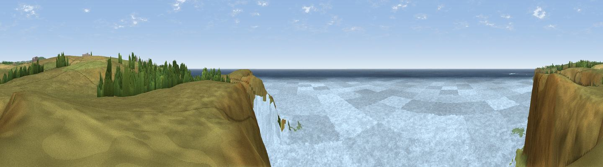
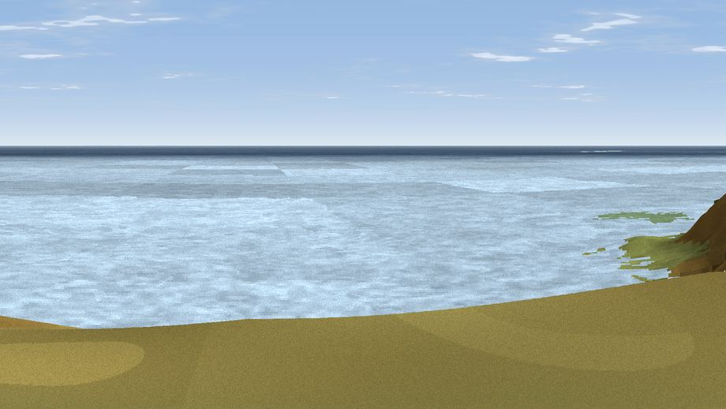
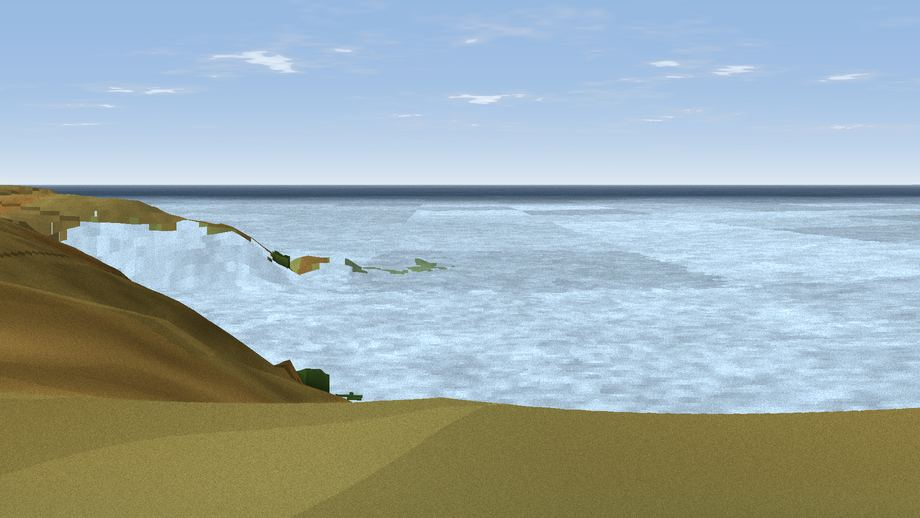

Viewpoint near Porthcurno
#7795 in England · top 34% of its area beats it · near PorthcurnoThe view, rendered

A 360° render of this exact spot computed from the terrain model, tree cover and land cover — summer colours, afternoon light, calibrated against photographs of famous viewpoints. Real trees, hedges and buildings will differ in detail.
Through the camera


Rendered views along the best directions of this panorama.
The panorama
Grey silhouette: terrain skyline in each direction (720 bearings, Earth curvature and refraction included). Dashed green: skyline with trees (+15 m) and buildings (+8 m) as obstacles. Blue strip: how far the ground is visible on each bearing.
Where the view opens
Wedge length = distance to the farthest visible ground on that bearing (vegetation-aware). Rings at 10, 25 and 50 km.
What fills the view
67% water · 28% grassland · 3% bare ground ·
Angular shares of the visible panorama (visual magnitude), not map area. Landscape diversity 0.35 (0–1 Shannon).
Key numbers
More beautiful places nearby
The staircase of upgrades: each row has a higher view potential than everything closer. Driving times are estimates from straight-line distance, calibrated against real road routing — check an actual route before setting out.
| Place | Direction | Drive | Score |
|---|---|---|---|
| Viewpoint near Porthcurno | SE · 1 km | ~2 min | 73.1 |
| Viewpoint near Bosavern | NNE · 6 km | ~13 min | 82.4 |
| Viewpoint near Morvah | NNE · 15 km | ~26 min | 83.2 |
| Viewpoint near Porthmeor | NNE · 15 km | ~27 min | 84.8 |
| Rosewall Hill | NE · 21 km | ~35 min | 88.0 |
| Viewpoint near Combe Martin | NE · 176 km | ~197 min | 88.9 |
| Holdstone Hill | NE · 177 km | ~198 min | 90.2 |
| The Knoll | ENE · 226 km | ~241 min | 91.0 |
50.04200, -5.68615 · source: screening · position refined by local search. Computed location — check access rights before visiting.